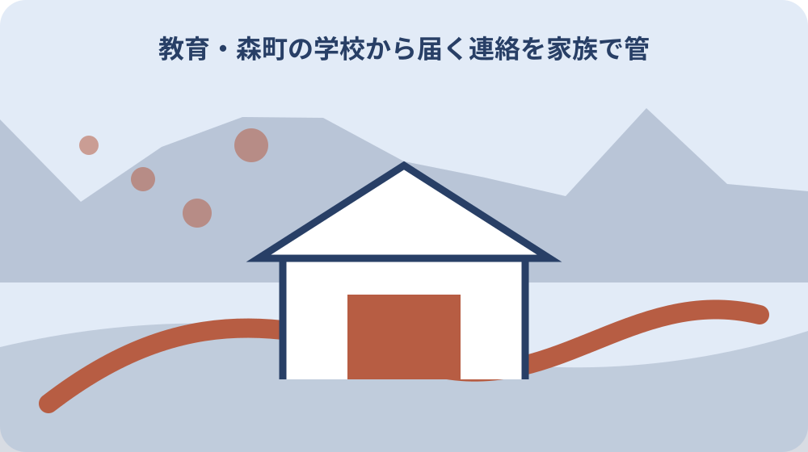
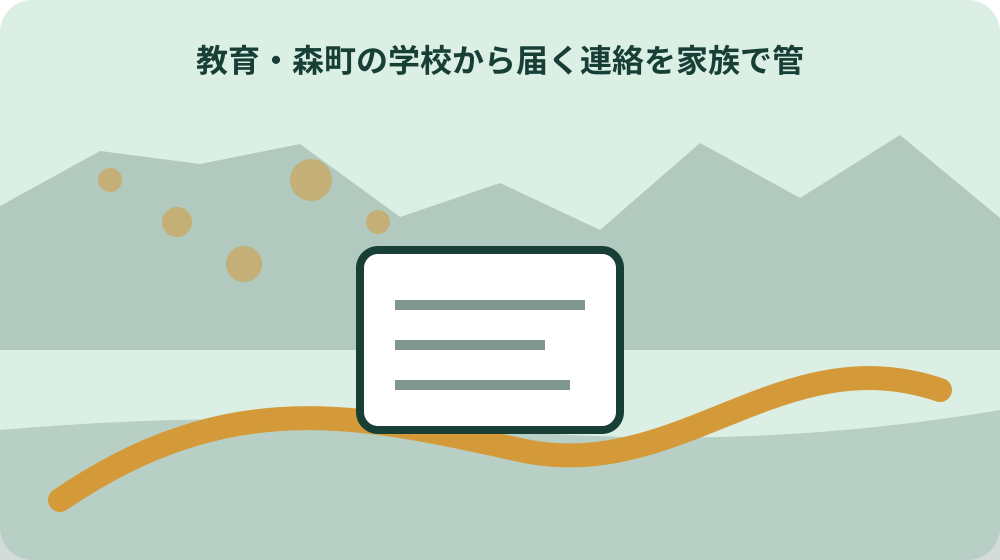

森町の学校から届く連絡を家族で管理するの結論：学校の配布物、メール、電話連絡を見落とさず、保護者間で締切と緊急連絡先を共有したい
焦点「学校から届く連絡を家族で管理する」の論点「森町の学校から届く連絡を家族で管理するの結論：学校の配布物、メール、電話連絡を見落とさず、保護者間で締切と緊急連絡先を共有したい」として、森町で特に分けて考える条件は「森町内でも森・一宮・園田・飯田と天方・三倉では移動時間が異なる。締切カレンダーを行う時刻と帰路を対象住所から確認する。」です。学校の配布物、メール、電話連絡を見落とさず、保護者間で締切と緊急連絡先を共有したいという目的に照らし、住所、利用者、実行時期のどれが違えば結論が変わるかを確認表へ書きます。町全体の一般論を個別地点の答えへ置き換えません。
焦点「学校から届く連絡を家族で管理する」の論点「森町の学校から届く連絡を家族で管理するの結論：学校の配布物、メール、電話連絡を見落とさず、保護者間で締切と緊急連絡先を共有したい」として、森町の学校から届く連絡を家族で管理する｜紙・メール・緊急連絡先の整理について家族や担当窓口へ尋ねるときは、「森町の学校から届く連絡を家族で管理するの結論：学校の配布物、メール、電話連絡を見落とさず、保護者間で締切と緊急連絡先を共有したい」「森町の学校から届く連絡を家族で管理するで判断する中心は、学校の配布物、メール、電話連絡を見落とさず、保護者間で締切と緊急連絡先を共有したいという具体的な目的であり、別制度の一般案内だけでは完結しない。」「未確認の個別条件」の三点を一組で伝えます。返答は可否だけでなく、根拠資料名、担当部署、再確認が必要な時点まで残します。
学校から届く連絡を家族で管理する・第1論点の断定防止：年度・対象・必要書類を公開直前に再確認。個別認定や可否を断定しない。家族本人の同意と個人情報に配慮。「森町の学校から届く連絡を家族で管理するで判断する中心は、学校の配布物、メール、電話連絡を見落とさず、保護者間で締切と緊急連絡先を共有したいという具体的な目的であり、別制度の一般案内だけでは完結しない。」を確認できない場合は結論を保留し、一次情報の所管窓口または必要な専門家へ確認します。
森町の学校から届く連絡を家族で管理するを森町公式の「連絡経路の確認」で確かめる
焦点「学校から届く連絡を家族で管理する」の論点「森町の学校から届く連絡を家族で管理するを森町公式の「連絡経路の確認」で確かめる」として、森町の学校から届く連絡を家族で管理する｜紙・メール・緊急連絡先の整理について家族や担当窓口へ尋ねるときは、「森町の学校から届く連絡を家族で管理するを森町公式の「連絡経路の確認」で確かめる」「森町公式の「学校教育課」は、森町の学校から届く連絡を家族で管理するについて町内で確認を始める一次情報として実在する。」「未確認の個別条件」の三点を一組で伝えます。返答は可否だけでなく、根拠資料名、担当部署、再確認が必要な時点まで残します。
焦点「学校から届く連絡を家族で管理する」の論点「森町の学校から届く連絡を家族で管理するを森町公式の「連絡経路の確認」で確かめる」として、実行前の記録には、第2の論点「森町の学校から届く連絡を家族で管理するを森町公式の「連絡経路の確認」で確かめる」、確認日、対象年度、担当者へ伝えた前提を書きます。休校情報の配信手段を固定せず、各校の案内に従うための家庭内管理として長期利用できる。このページで断定できない事項は推測で補わず、確認待ちとして次の担当と期限を決めます。
学校から届く連絡を家族で管理する・第2論点の断定防止：年度・対象・必要書類を公開直前に再確認。個別認定や可否を断定しない。家族本人の同意と個人情報に配慮。「森町公式の「学校教育課」は、森町の学校から届く連絡を家族で管理するについて町内で確認を始める一次情報として実在する。」を確認できない場合は結論を保留し、一次情報の所管窓口または必要な専門家へ確認します。
森町の学校から届く連絡を家族で管理するでは紙の置き場とメール受信を混同しない
焦点「学校から届く連絡を家族で管理する」の論点「森町の学校から届く連絡を家族で管理するでは紙の置き場とメール受信を混同しない」として、実行前の記録には、第3の論点「森町の学校から届く連絡を家族で管理するでは紙の置き場とメール受信を混同しない」、確認日、対象年度、担当者へ伝えた前提を書きます。休校情報の配信手段を固定せず、各校の案内に従うための家庭内管理として長期利用できる。このページで断定できない事項は推測で補わず、確認待ちとして次の担当と期限を決めます。
焦点「学校から届く連絡を家族で管理する」の論点「森町の学校から届く連絡を家族で管理するでは紙の置き場とメール受信を混同しない」として、この論点を後回しにすると、必要資料、移動、家族の役割、費用のいずれかで手戻りが起こります。まず「個人情報と年度更新を一枚にまとめ、学校教育課（図書館の利用は森町立図書館）へ相談する人と回答を家族へ戻す人を決める。」を確かめ、次に「森町公式の「小・中学校」も実在し、対象・場所・関連事項を別の角度から照合できる。」が自分のケースへ適用されるかを所管情報と窓口で照合してください。
学校から届く連絡を家族で管理する・第3論点の断定防止：年度・対象・必要書類を公開直前に再確認。個別認定や可否を断定しない。家族本人の同意と個人情報に配慮。「森町公式の「小・中学校」も実在し、対象・場所・関連事項を別の角度から照合できる。」を確認できない場合は結論を保留し、一次情報の所管窓口または必要な専門家へ確認します。
森町の学校から届く連絡を家族で管理するの締切カレンダーから期限を逆算する
焦点「学校から届く連絡を家族で管理する」の論点「森町の学校から届く連絡を家族で管理するの締切カレンダーから期限を逆算する」として、この論点を後回しにすると、必要資料、移動、家族の役割、費用のいずれかで手戻りが起こります。まず「森町内でも森・一宮・園田・飯田と天方・三倉では移動時間が異なる。締切カレンダーを行う時刻と帰路を対象住所から確認する。」を確かめ、次に「森町の学校から届く連絡を家族で管理するの法定期限・募集期限・受付期間は制度ごとに異なるため、対象日から逆算し、提出前営業日に森町公式の当年案内で確定する。」が自分のケースへ適用されるかを所管情報と窓口で照合してください。
焦点「学校から届く連絡を家族で管理する」の論点「森町の学校から届く連絡を家族で管理するの締切カレンダーから期限を逆算する」として、「森町の学校から届く連絡を家族で管理するの締切カレンダーから期限を逆算する」で根拠にする確認事項は、森町の学校から届く連絡を家族で管理するの法定期限・募集期限・受付期間は制度ごとに異なるため、対象日から逆算し、提出前営業日に森町公式の当年案内で確定する。です。この記載が今回の対象と一致するか、対象者、対象日、場所、例外を資料本文で照合します。確認元は https://www.town.morimachi.shizuoka.jp/gyosei/machinososhiki/gakkokyoikuka/index.html として記録し、検索結果の要約だけで判断しません。
学校から届く連絡を家族で管理する・第4論点の断定防止：年度・対象・必要書類を公開直前に再確認。個別認定や可否を断定しない。家族本人の同意と個人情報に配慮。「森町の学校から届く連絡を家族で管理するの法定期限・募集期限・受付期間は制度ごとに異なるため、対象日から逆算し、提出前営業日に森町公式の当年案内で確定する。」を確認できない場合は結論を保留し、一次情報の所管窓口または必要な専門家へ確認します。

森町の学校から届く連絡を家族で管理するについて学校教育課（図書館の利用は森町立図書館）へ「保護者分担」を伝える
焦点「学校から届く連絡を家族で管理する」の論点「森町の学校から届く連絡を家族で管理するについて学校教育課（図書館の利用は森町立図書館）へ「保護者分担」を伝える」として、「森町の学校から届く連絡を家族で管理するについて学校教育課（図書館の利用は森町立図書館）へ「保護者分担」を伝える」で根拠にする確認事項は、森町での最初の窓口候補は学校教育課（図書館の利用は森町立図書館）であり、担当外の場合は対象制度の担当係と引継ぎに必要な資料名を確認する。です。この記載が今回の対象と一致するか、対象者、対象日、場所、例外を資料本文で照合します。確認元は https://www.town.morimachi.shizuoka.jp/gyosei/kosodate_kyoiku/kyoiku_gakko/sho_chugakko/index.html として記録し、検索結果の要約だけで判断しません。
焦点「学校から届く連絡を家族で管理する」の論点「森町の学校から届く連絡を家族で管理するについて学校教育課（図書館の利用は森町立図書館）へ「保護者分担」を伝える」として、森町で特に分けて考える条件は「保護者分担と緊急連絡先を町公式情報の対象年度へ合わせ、前年の条件や別世帯の例をそのまま使わない。」です。学校の配布物、メール、電話連絡を見落とさず、保護者間で締切と緊急連絡先を共有したいという目的に照らし、住所、利用者、実行時期のどれが違えば結論が変わるかを確認表へ書きます。町全体の一般論を個別地点の答えへ置き換えません。
学校から届く連絡を家族で管理する・第5論点の断定防止：年度・対象・必要書類を公開直前に再確認。個別認定や可否を断定しない。家族本人の同意と個人情報に配慮。「森町での最初の窓口候補は学校教育課（図書館の利用は森町立図書館）であり、担当外の場合は対象制度の担当係と引継ぎに必要な資料名を確認する。」を確認できない場合は結論を保留し、一次情報の所管窓口または必要な専門家へ確認します。
森町の学校から届く連絡を家族で管理するの緊急連絡先に必要な資料をそろえる
焦点「学校から届く連絡を家族で管理する」の論点「森町の学校から届く連絡を家族で管理するの緊急連絡先に必要な資料をそろえる」として、森町で特に分けて考える条件は「個人情報と年度更新を一枚にまとめ、学校教育課（図書館の利用は森町立図書館）へ相談する人と回答を家族へ戻す人を決める。」です。学校の配布物、メール、電話連絡を見落とさず、保護者間で締切と緊急連絡先を共有したいという目的に照らし、住所、利用者、実行時期のどれが違えば結論が変わるかを確認表へ書きます。町全体の一般論を個別地点の答えへ置き換えません。
焦点「学校から届く連絡を家族で管理する」の論点「森町の学校から届く連絡を家族で管理するの緊急連絡先に必要な資料をそろえる」として、森町の学校から届く連絡を家族で管理する｜紙・メール・緊急連絡先の整理について家族や担当窓口へ尋ねるときは、「森町の学校から届く連絡を家族で管理するの緊急連絡先に必要な資料をそろえる」「森町の学校から届く連絡を家族で管理するでは「連絡経路の確認」「紙の置き場」「メール受信」を別欄で照合し、確認日と未確認事項を記録してから実行する。」「未確認の個別条件」の三点を一組で伝えます。返答は可否だけでなく、根拠資料名、担当部署、再確認が必要な時点まで残します。
学校から届く連絡を家族で管理する・第6論点の断定防止：年度・対象・必要書類を公開直前に再確認。個別認定や可否を断定しない。家族本人の同意と個人情報に配慮。「森町の学校から届く連絡を家族で管理するでは「連絡経路の確認」「紙の置き場」「メール受信」を別欄で照合し、確認日と未確認事項を記録してから実行する。」を確認できない場合は結論を保留し、一次情報の所管窓口または必要な専門家へ確認します。
森町の地区差から森町の学校から届く連絡を家族で管理するの個人情報を確認する
焦点「学校から届く連絡を家族で管理する」の論点「森町の地区差から森町の学校から届く連絡を家族で管理するの個人情報を確認する」として、森町の学校から届く連絡を家族で管理する｜紙・メール・緊急連絡先の整理について家族や担当窓口へ尋ねるときは、「森町の地区差から森町の学校から届く連絡を家族で管理するの個人情報を確認する」「森町公式の「公共交通」も実在し、この記事の主題を町内の関連条件と照合する第3の確認先になる。」「未確認の個別条件」の三点を一組で伝えます。返答は可否だけでなく、根拠資料名、担当部署、再確認が必要な時点まで残します。
焦点「学校から届く連絡を家族で管理する」の論点「森町の地区差から森町の学校から届く連絡を家族で管理するの個人情報を確認する」として、実行前の記録には、第7の論点「森町の地区差から森町の学校から届く連絡を家族で管理するの個人情報を確認する」、確認日、対象年度、担当者へ伝えた前提を書きます。休校情報の配信手段を固定せず、各校の案内に従うための家庭内管理として長期利用できる。このページで断定できない事項は推測で補わず、確認待ちとして次の担当と期限を決めます。
学校から届く連絡を家族で管理する・第7論点の断定防止：年度・対象・必要書類を公開直前に再確認。個別認定や可否を断定しない。家族本人の同意と個人情報に配慮。「森町公式の「公共交通」も実在し、この記事の主題を町内の関連条件と照合する第3の確認先になる。」を確認できない場合は結論を保留し、一次情報の所管窓口または必要な専門家へ確認します。
森町の学校から届く連絡を家族で管理するの年度更新で起こりやすい取り違え
焦点「学校から届く連絡を家族で管理する」の論点「森町の学校から届く連絡を家族で管理するの年度更新で起こりやすい取り違え」として、実行前の記録には、第8の論点「森町の学校から届く連絡を家族で管理するの年度更新で起こりやすい取り違え」、確認日、対象年度、担当者へ伝えた前提を書きます。休校情報の配信手段を固定せず、各校の案内に従うための家庭内管理として長期利用できる。このページで断定できない事項は推測で補わず、確認待ちとして次の担当と期限を決めます。
焦点「学校から届く連絡を家族で管理する」の論点「森町の学校から届く連絡を家族で管理するの年度更新で起こりやすい取り違え」として、この論点を後回しにすると、必要資料、移動、家族の役割、費用のいずれかで手戻りが起こります。まず「保護者分担と緊急連絡先を町公式情報の対象年度へ合わせ、前年の条件や別世帯の例をそのまま使わない。」を確かめ、次に「森町の学校から届く連絡を家族で管理するで判断する中心は、学校の配布物、メール、電話連絡を見落とさず、保護者間で締切と緊急連絡先を共有したいという具体的な目的であり、別制度の一般案内だけでは完結しない。」が自分のケースへ適用されるかを所管情報と窓口で照合してください。
学校から届く連絡を家族で管理する・第8論点の断定防止：年度・対象・必要書類を公開直前に再確認。個別認定や可否を断定しない。家族本人の同意と個人情報に配慮。「森町の学校から届く連絡を家族で管理するで判断する中心は、学校の配布物、メール、電話連絡を見落とさず、保護者間で締切と緊急連絡先を共有したいという具体的な目的であり、別制度の一般案内だけでは完結しない。」を確認できない場合は結論を保留し、一次情報の所管窓口または必要な専門家へ確認します。
家族や関係者へ森町の学校から届く連絡を家族で管理するの連絡経路の確認を共有する
焦点「学校から届く連絡を家族で管理する」の論点「家族や関係者へ森町の学校から届く連絡を家族で管理するの連絡経路の確認を共有する」として、この論点を後回しにすると、必要資料、移動、家族の役割、費用のいずれかで手戻りが起こります。まず「個人情報と年度更新を一枚にまとめ、学校教育課（図書館の利用は森町立図書館）へ相談する人と回答を家族へ戻す人を決める。」を確かめ、次に「森町公式の「学校教育課」は、森町の学校から届く連絡を家族で管理するについて町内で確認を始める一次情報として実在する。」が自分のケースへ適用されるかを所管情報と窓口で照合してください。
焦点「学校から届く連絡を家族で管理する」の論点「家族や関係者へ森町の学校から届く連絡を家族で管理するの連絡経路の確認を共有する」として、「家族や関係者へ森町の学校から届く連絡を家族で管理するの連絡経路の確認を共有する」で根拠にする確認事項は、森町公式の「学校教育課」は、森町の学校から届く連絡を家族で管理するについて町内で確認を始める一次情報として実在する。です。この記載が今回の対象と一致するか、対象者、対象日、場所、例外を資料本文で照合します。確認元は https://www.town.morimachi.shizuoka.jp/gyosei/machinososhiki/gakkokyoikuka/index.html として記録し、検索結果の要約だけで判断しません。
学校から届く連絡を家族で管理する・第9論点の断定防止：年度・対象・必要書類を公開直前に再確認。個別認定や可否を断定しない。家族本人の同意と個人情報に配慮。「森町公式の「学校教育課」は、森町の学校から届く連絡を家族で管理するについて町内で確認を始める一次情報として実在する。」を確認できない場合は結論を保留し、一次情報の所管窓口または必要な専門家へ確認します。

森町の学校から届く連絡を家族で管理するの紙の置き場を実行しない場合の代案
焦点「学校から届く連絡を家族で管理する」の論点「森町の学校から届く連絡を家族で管理するの紙の置き場を実行しない場合の代案」として、「森町の学校から届く連絡を家族で管理するの紙の置き場を実行しない場合の代案」で根拠にする確認事項は、森町公式の「小・中学校」も実在し、対象・場所・関連事項を別の角度から照合できる。です。この記載が今回の対象と一致するか、対象者、対象日、場所、例外を資料本文で照合します。確認元は https://www.town.morimachi.shizuoka.jp/gyosei/kosodate_kyoiku/kyoiku_gakko/sho_chugakko/index.html として記録し、検索結果の要約だけで判断しません。
焦点「学校から届く連絡を家族で管理する」の論点「森町の学校から届く連絡を家族で管理するの紙の置き場を実行しない場合の代案」として、森町で特に分けて考える条件は「森町内でも森・一宮・園田・飯田と天方・三倉では移動時間が異なる。締切カレンダーを行う時刻と帰路を対象住所から確認する。」です。学校の配布物、メール、電話連絡を見落とさず、保護者間で締切と緊急連絡先を共有したいという目的に照らし、住所、利用者、実行時期のどれが違えば結論が変わるかを確認表へ書きます。町全体の一般論を個別地点の答えへ置き換えません。
学校から届く連絡を家族で管理する・第10論点の断定防止：年度・対象・必要書類を公開直前に再確認。個別認定や可否を断定しない。家族本人の同意と個人情報に配慮。「森町公式の「小・中学校」も実在し、対象・場所・関連事項を別の角度から照合できる。」を確認できない場合は結論を保留し、一次情報の所管窓口または必要な専門家へ確認します。
このページの結論
焦点「学校から届く連絡を家族で管理する」のこのページの結論で私が重視する第1の判断材料は「森町の学校から届く連絡を家族で管理するで判断する中心は、学校の配布物、メール、電話連絡を見落とさず、保護者間で締切と緊急連絡先を共有したいという具体的な目的であり、別制度の一般案内だけでは完結しない。」と「森町内でも森・一宮・園田・飯田と天方・三倉では移動時間が異なる。締切カレンダーを行う時刻と帰路を対象住所から確認する。」の照合です。まだ実行を決めていなくても、確認日、対象、根拠、未確認事項を一枚に残せば、家族や担当者が同じ前提から話せます。確認できない事項は結論に混ぜず、次の確認先と期限を記録してください。
焦点「学校から届く連絡を家族で管理する」のこのページの結論で私が重視する第2の判断材料は「森町公式の「学校教育課」は、森町の学校から届く連絡を家族で管理するについて町内で確認を始める一次情報として実在する。」と「保護者分担と緊急連絡先を町公式情報の対象年度へ合わせ、前年の条件や別世帯の例をそのまま使わない。」の照合です。まだ実行を決めていなくても、確認日、対象、根拠、未確認事項を一枚に残せば、家族や担当者が同じ前提から話せます。確認できない事項は結論に混ぜず、次の確認先と期限を記録してください。
焦点「学校から届く連絡を家族で管理する」のこのページの結論で私が重視する第3の判断材料は「森町公式の「小・中学校」も実在し、対象・場所・関連事項を別の角度から照合できる。」と「個人情報と年度更新を一枚にまとめ、学校教育課（図書館の利用は森町立図書館）へ相談する人と回答を家族へ戻す人を決める。」の照合です。まだ実行を決めていなくても、確認日、対象、根拠、未確認事項を一枚に残せば、家族や担当者が同じ前提から話せます。確認できない事項は結論に混ぜず、次の確認先と期限を記録してください。
焦点「学校から届く連絡を家族で管理する」のこのページの結論で私が重視する第4の判断材料は「森町の学校から届く連絡を家族で管理するの法定期限・募集期限・受付期間は制度ごとに異なるため、対象日から逆算し、提出前営業日に森町公式の当年案内で確定する。」と「森町内でも森・一宮・園田・飯田と天方・三倉では移動時間が異なる。締切カレンダーを行う時刻と帰路を対象住所から確認する。」の照合です。まだ実行を決めていなくても、確認日、対象、根拠、未確認事項を一枚に残せば、家族や担当者が同じ前提から話せます。確認できない事項は結論に混ぜず、次の確認先と期限を記録してください。
大石の視点
焦点「学校から届く連絡を家族で管理する」の大石の視点で私が重視する第1の判断材料は「森町公式の「小・中学校」も実在し、対象・場所・関連事項を別の角度から照合できる。」と「個人情報と年度更新を一枚にまとめ、学校教育課（図書館の利用は森町立図書館）へ相談する人と回答を家族へ戻す人を決める。」の照合です。まだ実行を決めていなくても、確認日、対象、根拠、未確認事項を一枚に残せば、家族や担当者が同じ前提から話せます。確認できない事項は結論に混ぜず、次の確認先と期限を記録してください。
焦点「学校から届く連絡を家族で管理する」の大石の視点で私が重視する第2の判断材料は「森町の学校から届く連絡を家族で管理するの法定期限・募集期限・受付期間は制度ごとに異なるため、対象日から逆算し、提出前営業日に森町公式の当年案内で確定する。」と「森町内でも森・一宮・園田・飯田と天方・三倉では移動時間が異なる。締切カレンダーを行う時刻と帰路を対象住所から確認する。」の照合です。まだ実行を決めていなくても、確認日、対象、根拠、未確認事項を一枚に残せば、家族や担当者が同じ前提から話せます。確認できない事項は結論に混ぜず、次の確認先と期限を記録してください。
焦点「学校から届く連絡を家族で管理する」の大石の視点で私が重視する第3の判断材料は「森町での最初の窓口候補は学校教育課（図書館の利用は森町立図書館）であり、担当外の場合は対象制度の担当係と引継ぎに必要な資料名を確認する。」と「保護者分担と緊急連絡先を町公式情報の対象年度へ合わせ、前年の条件や別世帯の例をそのまま使わない。」の照合です。まだ実行を決めていなくても、確認日、対象、根拠、未確認事項を一枚に残せば、家族や担当者が同じ前提から話せます。確認できない事項は結論に混ぜず、次の確認先と期限を記録してください。
焦点「学校から届く連絡を家族で管理する」の大石の視点で私が重視する第4の判断材料は「森町の学校から届く連絡を家族で管理するでは「連絡経路の確認」「紙の置き場」「メール受信」を別欄で照合し、確認日と未確認事項を記録してから実行する。」と「個人情報と年度更新を一枚にまとめ、学校教育課（図書館の利用は森町立図書館）へ相談する人と回答を家族へ戻す人を決める。」の照合です。まだ実行を決めていなくても、確認日、対象、根拠、未確認事項を一枚に残せば、家族や担当者が同じ前提から話せます。確認できない事項は結論に混ぜず、次の確認先と期限を記録してください。
まとめと次の一歩
焦点「学校から届く連絡を家族で管理する」のまとめと次の一歩で私が重視する第1の判断材料は「森町での最初の窓口候補は学校教育課（図書館の利用は森町立図書館）であり、担当外の場合は対象制度の担当係と引継ぎに必要な資料名を確認する。」と「保護者分担と緊急連絡先を町公式情報の対象年度へ合わせ、前年の条件や別世帯の例をそのまま使わない。」の照合です。まだ実行を決めていなくても、確認日、対象、根拠、未確認事項を一枚に残せば、家族や担当者が同じ前提から話せます。確認できない事項は結論に混ぜず、次の確認先と期限を記録してください。
焦点「学校から届く連絡を家族で管理する」のまとめと次の一歩で私が重視する第2の判断材料は「森町の学校から届く連絡を家族で管理するでは「連絡経路の確認」「紙の置き場」「メール受信」を別欄で照合し、確認日と未確認事項を記録してから実行する。」と「個人情報と年度更新を一枚にまとめ、学校教育課（図書館の利用は森町立図書館）へ相談する人と回答を家族へ戻す人を決める。」の照合です。まだ実行を決めていなくても、確認日、対象、根拠、未確認事項を一枚に残せば、家族や担当者が同じ前提から話せます。確認できない事項は結論に混ぜず、次の確認先と期限を記録してください。
焦点「学校から届く連絡を家族で管理する」のまとめと次の一歩で私が重視する第3の判断材料は「森町公式の「公共交通」も実在し、この記事の主題を町内の関連条件と照合する第3の確認先になる。」と「森町内でも森・一宮・園田・飯田と天方・三倉では移動時間が異なる。締切カレンダーを行う時刻と帰路を対象住所から確認する。」の照合です。まだ実行を決めていなくても、確認日、対象、根拠、未確認事項を一枚に残せば、家族や担当者が同じ前提から話せます。確認できない事項は結論に混ぜず、次の確認先と期限を記録してください。
焦点「学校から届く連絡を家族で管理する」のまとめと次の一歩で私が重視する第4の判断材料は「森町の学校から届く連絡を家族で管理するで判断する中心は、学校の配布物、メール、電話連絡を見落とさず、保護者間で締切と緊急連絡先を共有したいという具体的な目的であり、別制度の一般案内だけでは完結しない。」と「保護者分担と緊急連絡先を町公式情報の対象年度へ合わせ、前年の条件や別世帯の例をそのまま使わない。」の照合です。まだ実行を決めていなくても、確認日、対象、根拠、未確認事項を一枚に残せば、家族や担当者が同じ前提から話せます。確認できない事項は結論に混ぜず、次の確認先と期限を記録してください。